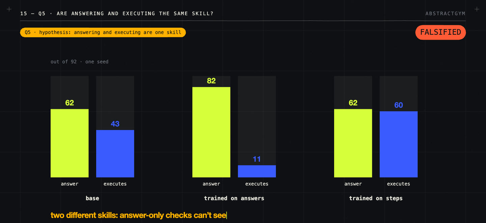

/ TWO VIDEOS · 19 + 20 MIN · 6 MIN READ
AbstractGym:
can an LLM execute a program?
When a language model writes a program, we can run it. When it writes a chain of thought, we usually check only the answer at the end. In the first case, execution happens in a system that enforces the rules of the program. In the second, the model writes both the steps and their consequences, and a correct answer can hide a procedure that was never followed.
This distinction matters increasingly as we ask models to act as agents. Following a procedure over many steps requires more than recognizing what its final answer should look like. Yet final-answer checkers can reward either skill, and training has no reason to prefer the one we had in mind if the other is easier to acquire.
The question predates today's reasoning models. Learning to Execute (2014) trained networks to print the output of short Python programs. More recent theory shows how written intermediate steps can extend a transformer's computational power beyond a single pass (Feng et al., Li et al., Merrill and Sabharwal). But an available computation need not be the computation a trained model uses. Turpin et al. showed that written reasoning need not faithfully explain how an answer was reached.
I built AbstractGym to make execution observable. Each puzzle asks whether a grammar can generate a string. For example, with \(S \to a\,S\,c \mid b\,S\,d \mid e\), the derivation \(S \to aSc \to abSdc \to abedc\) builds \(abedc\). The model receives an exact search procedure: try rules in order, prune a branch as soon as it disagrees with the target, and backtrack. The gym checks every move against the prescribed run and stops at the first error. We can then ask the same puzzle as a plain yes or no.
Every string is paired with a grammar that generates it and one that does not. Ignoring the grammar therefore scores exactly 50%. Qwen3-14B answers 204 of 240 puzzles correctly, against 120 for a coin, but completes only 30 executions. At its first wrong move, it jumps toward the outcome it can already see.

Does it know the procedure, or just the answer?
I started with six hypotheses and tried to break them. The first was that the model executes the procedure silently and only then answers. In the answer-versus-written-run comparison, 208 puzzles had a correct answer and an incorrect run; none had the reverse. Removing a giveaway cue made the distinction clearer: answers held up where one visible comparison settled the question, but fell to a coin flip on deep random grammars. Correctness alone was weak evidence of execution.
Perhaps the model just needed more room to think? Thinking mode increased complete runs from 28 to 44, using about seven times as many tokens. Of those 44 successes, 42 were yes cases. Extra computation helped construct a match much more than it helped exhaust the search and establish that no match existed.
That asymmetry matters. A successful branch supplies a witness; a no answer requires ruling out every branch the procedure would explore. More text gave the model additional opportunities to reach a visible success without making it a reliable executor of the whole search.
Separating the step from the state
The third hypothesis concerned memory. I moved the search state into the gym, where it could be held exactly, and left the model only the next-move decision. Complete runs rose to 40–68 of 240, and explicitly spelling out facts about the state did not help. Removing bookkeeping was useful, but insufficient: the model still needed to learn the step.
On a simpler bracket task, a small adapter trained on single correct moves raised complete executions from 43 to 60 of 92. The results depended on the symbols and training seed. We could teach more of the local operation, but its acquisition was not yet robust.
The fourth test asked whether that learned operation could carry an entire run in the model's own text. A model trained on single moves completed 133 of 240 runs with external state, but none when asked to write the whole execution: it wrote one move and stopped. Adding complete written runs to training produced 100 written executions and 156 with the gym holding the state, the best result of the study. Knowing what to do next and sustaining the format in which to do it were separate requirements.
Training can improve the answer while damaging the procedure
The fifth test made the separation explicit. On the 92 bracket puzzles, answer training raised correct answers from 62 to 82 and reduced complete executions from 43 to 11. Step training raised executions to 60 while leaving answers at 62. If we had evaluated only the answers, we would have called the first model an improvement and missed the collapse in execution.
The sixth hypothesis was that each next move could be decided independently of the model's earlier text. I supplied a history whose opening moves were wrong. Correct later moves fell from 502 to 214 of 576; the model neither recovered the original plan nor consistently executed the incorrect one. The history was steering the computation, even when it should have been possible to decide the next move from the current state.
Taken together, these tests make chain of thought a more specific engineering problem. We need the model to learn an operation, preserve its state, and continue applying it despite the history it has generated. A final-answer reward does not distinguish those achievements from a shortcut that reaches the same answer.
What belongs in the model, and what belongs around it?
Agent harnesses already manage much of this division of labor: they choose what the model sees at each call and keep the rest in external state. Here, the same trained model completed 156 runs with the gym's memory against 100 with its own written state. In long written runs, the first error came later as the run length increased, a pattern consistent with difficulty maintaining state. Holding that state exactly removes work the model cannot yet do reliably. It does not teach a missing operation.
The unit that trained well was a single step, repeated to make a run. That suggests a connection with looped transformers, which reuse a block across iterations. Whether looping would help here is my speculation; this study did not test it. Larger models may also learn to manage their own state well enough to change the balance.
The evidence comes from one model family, mostly one training seed, and 240 puzzles built from 30 structures in four letterings. Training was supervised only. The next questions are whether reinforcement learning with the step checker can teach reliable execution, and what the model computes in a single pass on the puzzles it already decides. AbstractGym gives us a way to reward the procedure we actually want, and to see when better answers are concealing worse execution.
Watch on the Understanding Transformers playlist ↗ · Code · Checkpoints